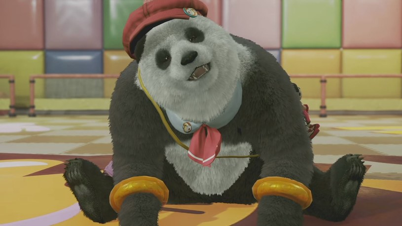
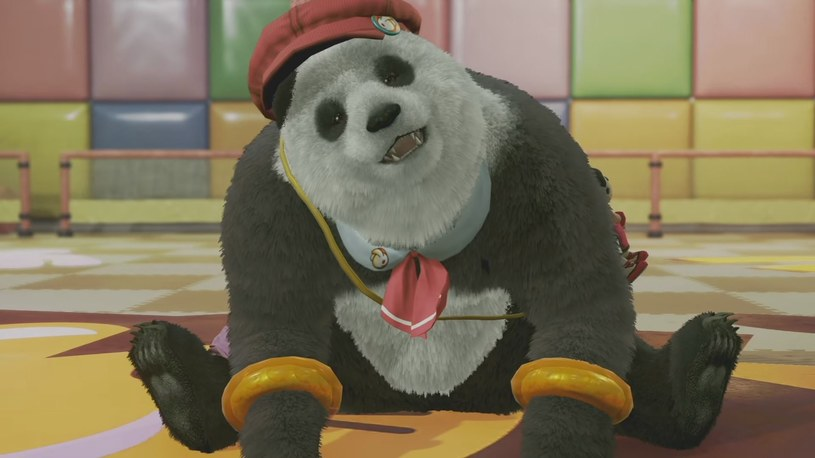
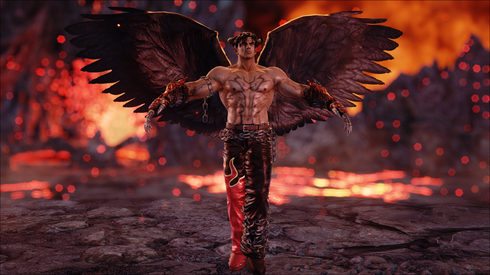
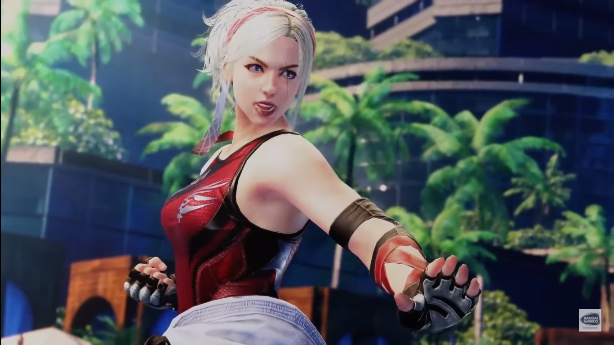
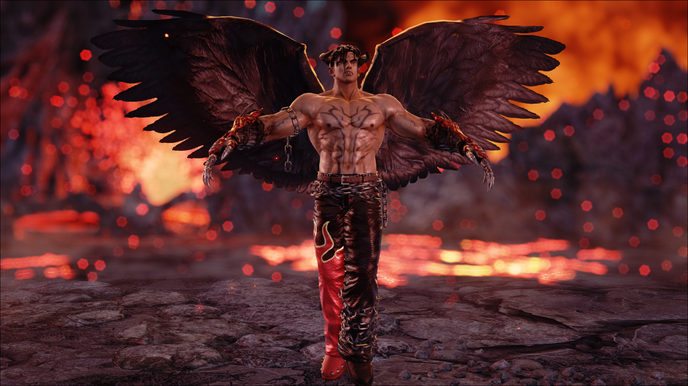
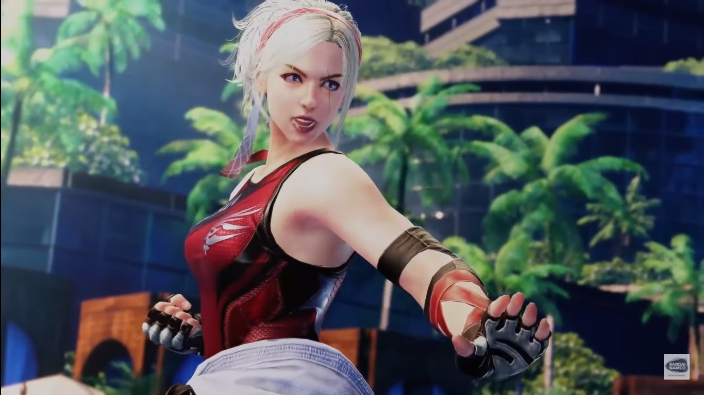

Tekken 7
Miłość, zemsta, duma. Każdy z nas ma powód do walki – są nimi wartości, które definiują nas i czynią nas ludźmi, bez względu na nasze słabości bądź atuty. Nie ma złych pobudek, jedynie drogi, które wybieramy. Doświadcz epickiego finału historii klanu Mishima i odkryj powody, które stały za ich nieustannymi walkami. Oparty na silniku Unreal Engine 4, Tekken 7 zaoferuje oszałamiające, skupiające się na historii walki przedstawione w kinowym stylu. Innowacyjne mechaniki rozgrywki umożliwiają toczenie intensywnych pojedynków, którymi będzie można cieszyć się razem z przyjaciółmi, bądź rywalami.
Postacie
Tekken 7 zawiera bogaty zbiór ponad 30 postaci zawierający nowych zawodników z jednym z największych zestawów ciosów w bijatykach, dzięki czemu będzie można poczuć prawdziwą swobodę własnego stylu walki. Znajdź swoje ulubione zabójcze techniki, sztuki walki i kombosy, by wygrywać pojedynki! Został on przeniesiony w trzeci wymiar i dołącza do walki wraz ze wszystkimi ruchami ze stylu shoto i ognistymi kulami.
Opis
W grze Tekken 7 doświadczysz wciągającej historii, na którą składają się oszałamiające sekwencje filmowe opowiadające fabułę płynnie łącząc się z zaciekłymi pojedynkami. Gracz odkryje w ten innowacyjny sposób historię rodziny Mishima. Klasyczne pojedynki 1vs1 powracają do gry, wraz z nowymi ciosami i mechanikami takimi jak „Rage Arts”, „Power Crushes” i „Rage Drives”, które czynią grę jeszcze bardziej przystępną dla graczy na każdym poziomie zaawansowania. Wygrywanie pojedynków z przyjaciółmi w grze Tekken 7 może być oparte albo na wytrwałym treningu albo czystej zabawie.
Combo System
Combo System w Tekken 7 zachowuje niektóre aspekty Tekken Revolution, w których nie można już związać postaci podczas kombinacji. Jednak stan związany nadal istnieje, ale „wiele ruchów używanych do wiązania jest usuwanych”. Aby zrekompensować brak ograniczeń, wiele ruchów otrzymało nową dynamikę kombinacji w celu wydłużenia kombinacji. Niskie sparowania nadal będą powodowały efekt ograniczenia, tak jak w Tekken 6: Bloodline Rebellion.
 

 


